Penvins 2008

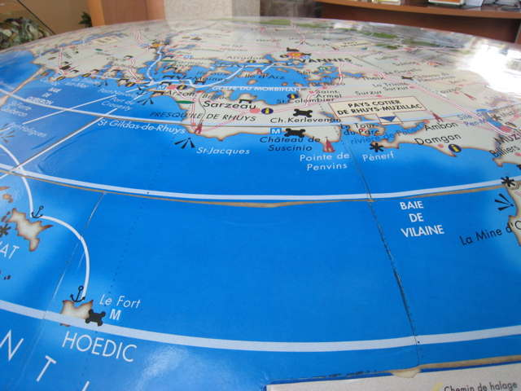
Penvins, pour ceux qui ne savent pas, le voilà sur la mappemonde ! Pour info, Bétahon est à droite entre Damgan et Billiers...

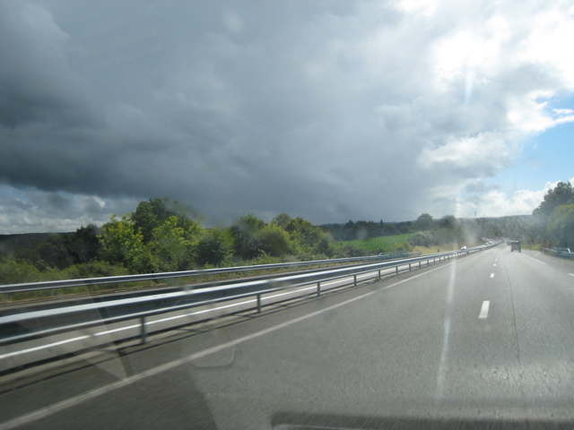
A l'arrivée, grand soleil ! Euh, sauf sous ce grain, et Penvins, c'est juste là, sous la pluie exactement !

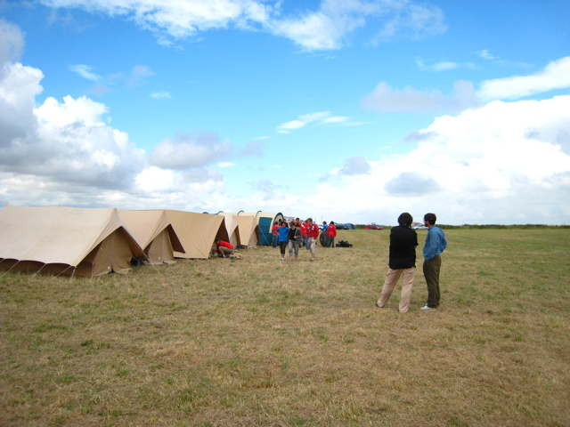
Vendredi soir, les scouts sont déjà arrivés et ont monté leurs tentes bien en ordre, pas comme les cervolistes !

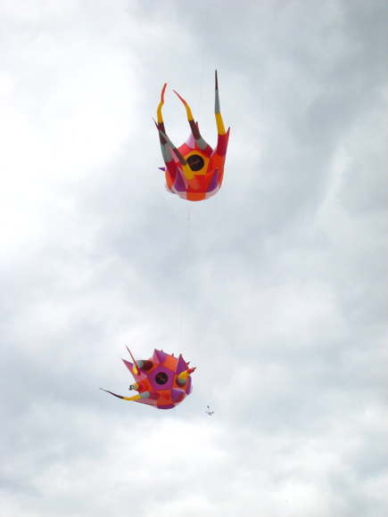
Samedi matin, quand je me lève, il y a déjà des cerfs-volants en l'air...

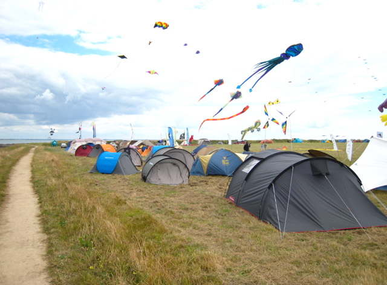
Le camp des cervolistes est un peu plus en b... désordre que celui des scouts...

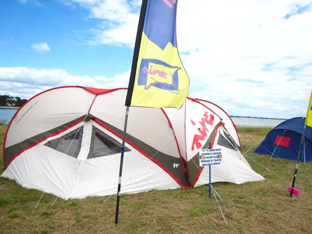
Les Espagnols ont monté calmement, eux, leur grande tente triangulaire, et se présentent par une pancarte en français...

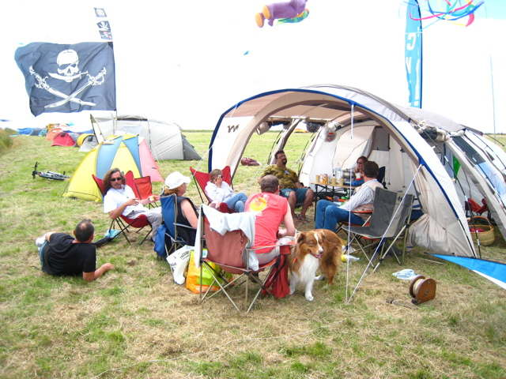
Gwenaëlle et David ont eux, une grande tente qui servira de PC aux monofilistes surtout du CVCF, mais aussi aux Pirates...

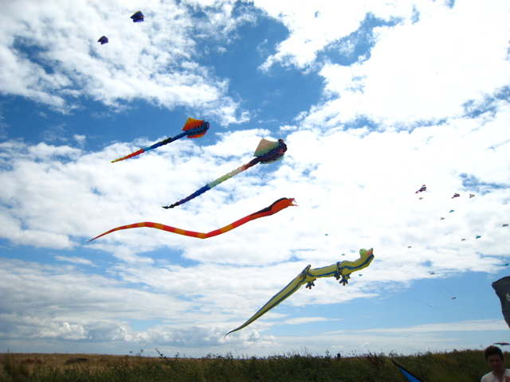
Les AWITAS sont arrivés, et ont monté leurs gros gonflables habituels...

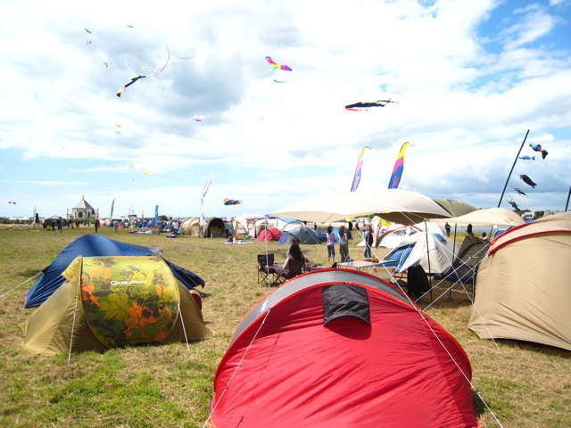
Les tentes des cervolistes couvrent deux côtés du terrain pourtant immense ! Et encore, les voitures sont exclues pour raisons écologiques et resteront sur le parking spécialement réservé.

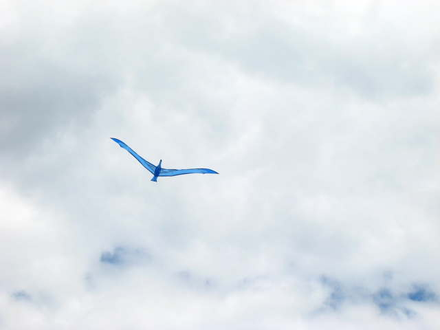
Le vent suivra le même schéma tous les jours : nul le matin, et brise de mer s'établissant progressivement, jusqu'à 35 km/h le samedi, moins dimanche et lundi ! Mon oiseau bleu, que j'ai monté au matin, commence à souffrir sérieusement, malgré un réglage de dièdre très violent !

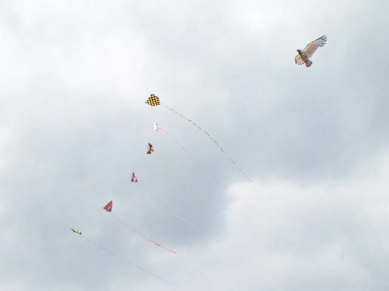
Un Brésilien a joué tout le week-end avec des pipas. Là, il les a montés en train, mais ça ne marche pas bien, ils tournent et se collent au fil...

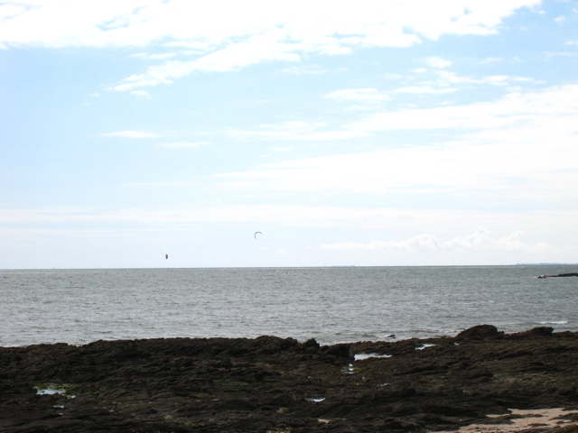
Au loin, très loin, des kite-surfers s'éclatent sur une mer encore assez lisse...

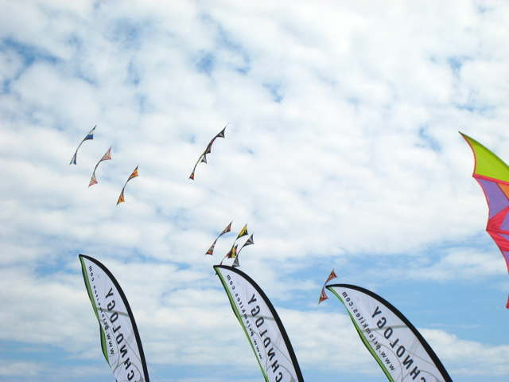
Les Flics sont présents, ainsi que de nombreux Révolutionnaires et s'en donnent à coeur-joie !

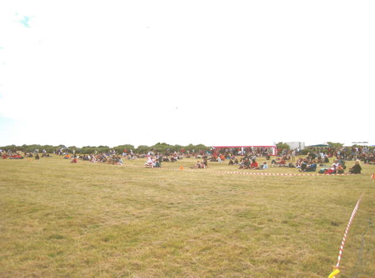
Le public est déjà venu nombreux en ce samedi malgré une météo moyenne, et se pose sur la pelouse devant la vaste aire de démonstration !

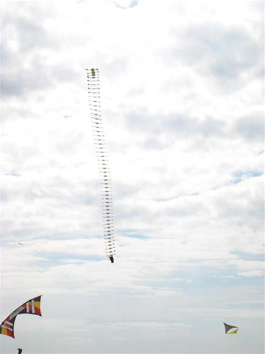
On verra même un dragon. Contrairement à la première impression sur la fragilité du papier, ils aiment le vent fort !

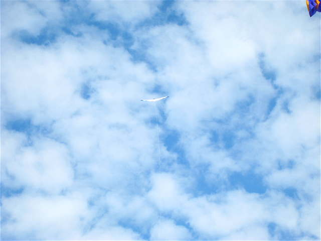
L'Oiseau Bleu a fini par passer la main, mon Albatros a pris la relève...

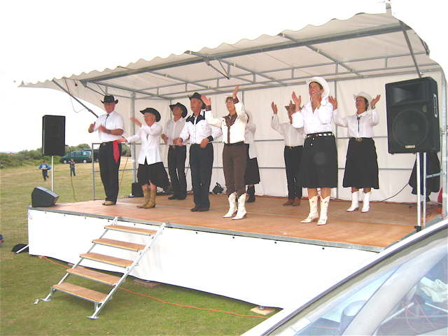
Le soir arrivé, dîner et Country-Dance sur l'estrade de show ! J'aime bien la Country-Music, mais les choix des danseurs ne correspondent pas aux miens, en général... Je dois avoir tort, ils sont spécialistes !

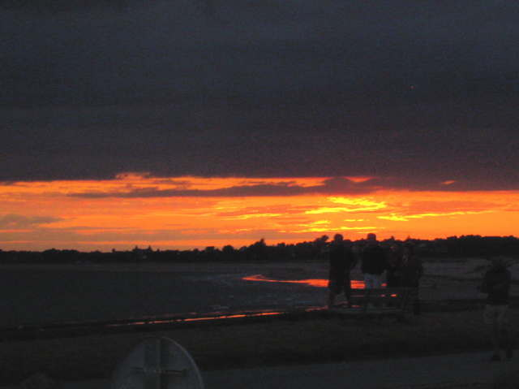
Le soleil se couche derrière la plage de Penvins et se reflète sur celle-ci, encore humide !

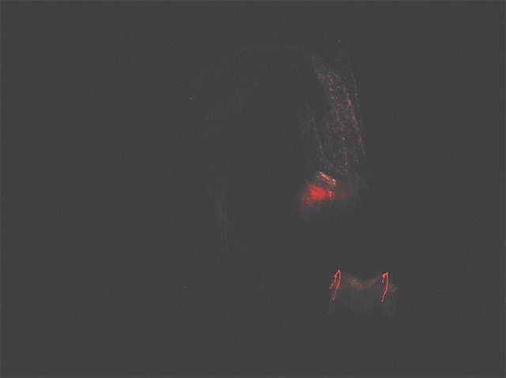
Vol de nuit, j'explique : en haut, un train de 3 Révos en mylars argentés de 3 couleurs, traînant de longues queues de mylar argenté aussi, majestueux et splendide ! En bas, un Révo qui l'accompagne, muni de 2 petites leds rouges...

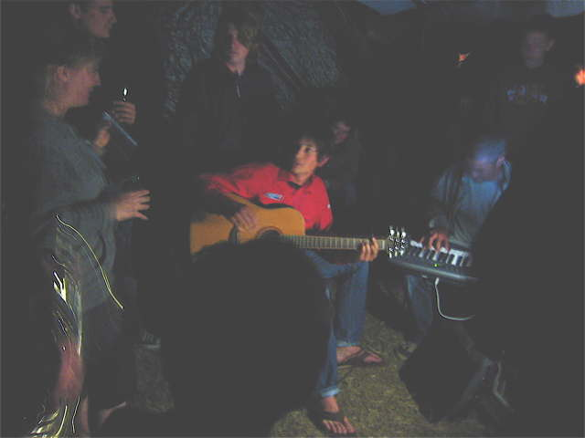
Sous la tente sono, on sonorise ! Foin des CDs, c'est du direct avec une guitare, un clavier, une chanteuse (la présentatrice toute la journée) et un Djembé, tous très bons, surtout les 3 premiers.

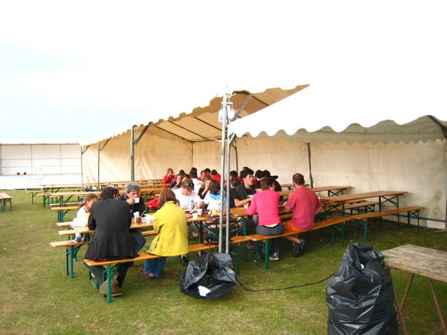
Dimanche matin, petit-déjeuner offert, un peu clairsemé, certains se sont couchés tard !

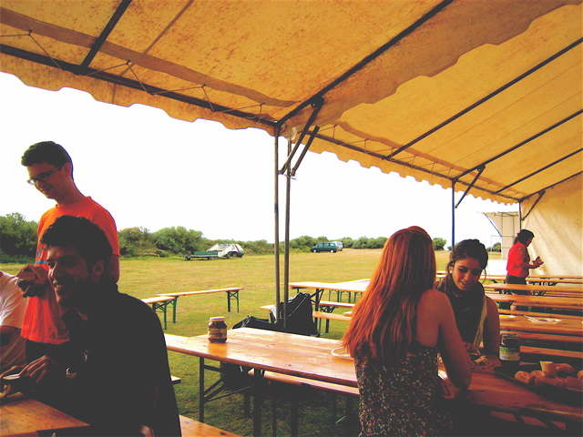
Je photographie les petits lapins qui sortent des buissons pour déjeuner aussi, ils ont dû avoir du mal à dormir, ils ont les yeux rouges !

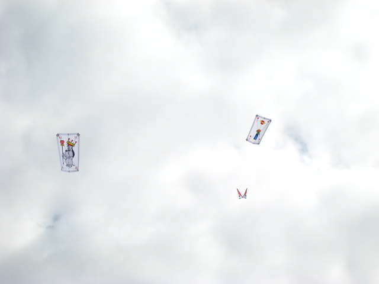
On voit ressortir les cartes du CVCCeltique, le cervoliste de Yannick et le Droopy de David !

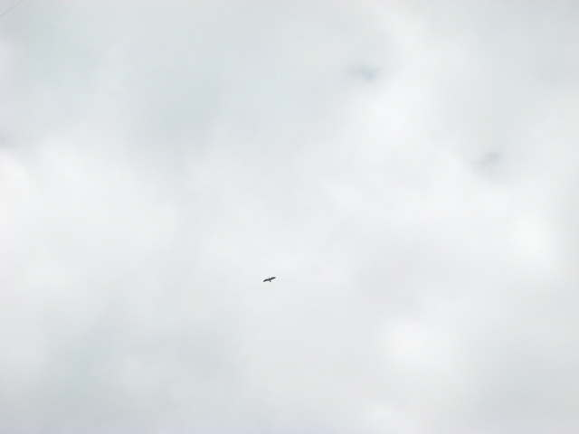
Un faucon tournoie là-haut, les cerfs-volants vont lui saboter sa journée de chasse, mais il ne nous en veut pas !

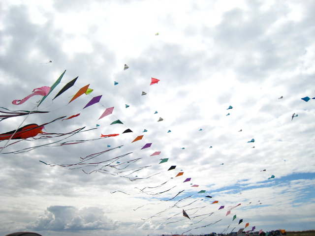
Les AWITAs ont lancé leurs deltas ultrastables et innombrables, et François a érigé son arche...

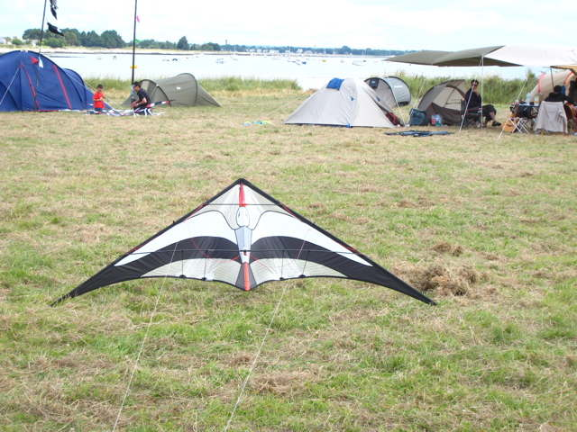
Même les deux-ligneurs peuvent être créatifs et ne pas acheter systématiquement dans le commerce, cette belle cigogne en témoigne...

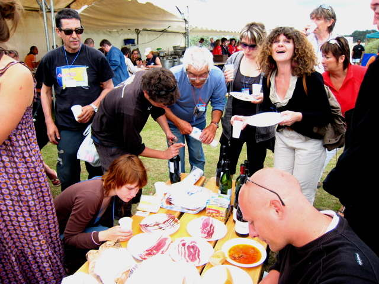
En prélude au déjeuner, les Ibères offrent un apéritif avec des productions de leur pays, dont plusieurs sortes de jambons, délicieux !

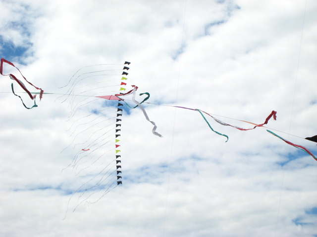
Dans la surface de démo, un train de petits deltas (petits forcément, des grands, ça arracherait les bras !) à longues queues, comme ceux des Italiens présentés à Berck...

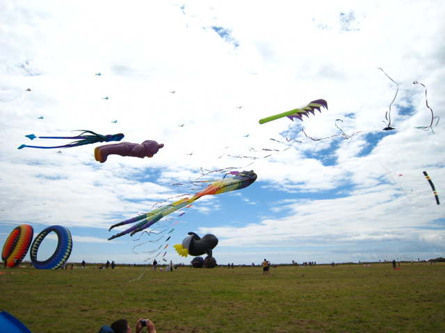
En parallèle aux "gros" des Awitas, nous avons monté le flow-form de Beauce avec une grosse queue verte de François...

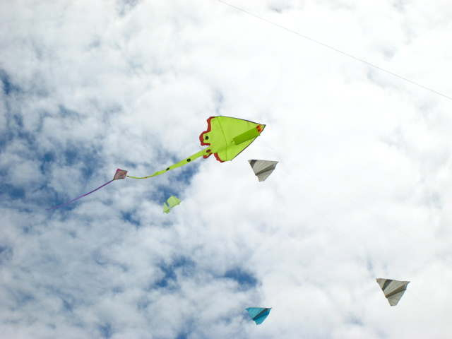
Avec les deltas Awitas et extrapolant leur plan, un créateur a réalisé ce delta spécial un peu plus agrémenté et qui vole bien...

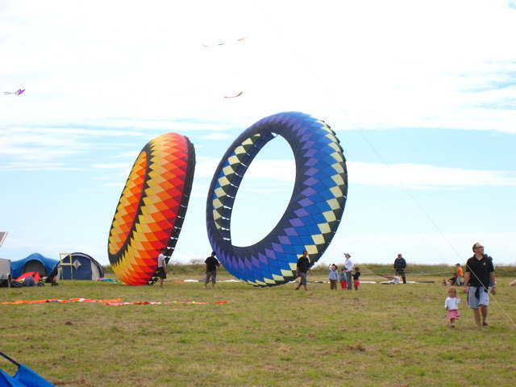
Vent moyen, c'est ce qu'il faut pour ces deux gros bols qu'il vaut mieux bien ancrer quand même...

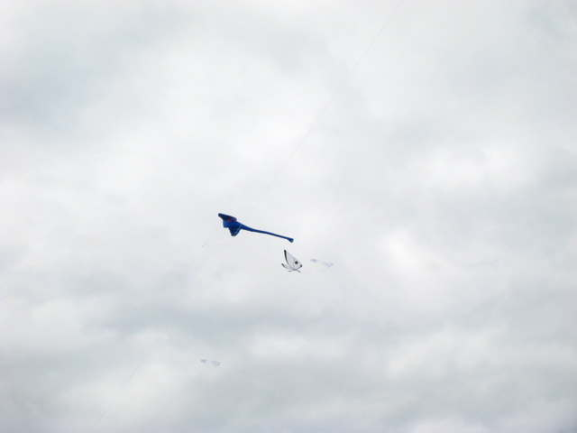
Là-haut, un sombre éléphant agite ses oreilles et sa trompe !

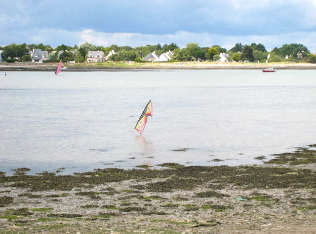
Sur les eaux calmes du port d'échouage, un Révo fait des ronds et des sillages...

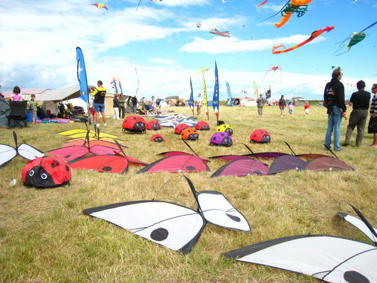
Une bande de cervolistes qui ne manque pas de matériel, en tout cas...

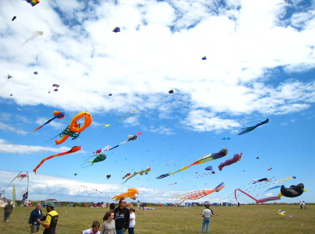
Grâce aux Awitas, mais pas qu'à eux, le ciel est maintenant bien meublé...

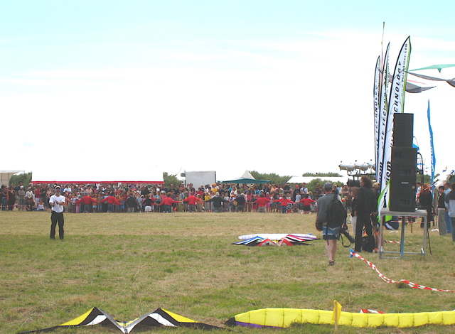
Comme tous les ans, les scouts font la chaîne... pour empêcher les enfants d'anticiper le lâcher de bonbons !

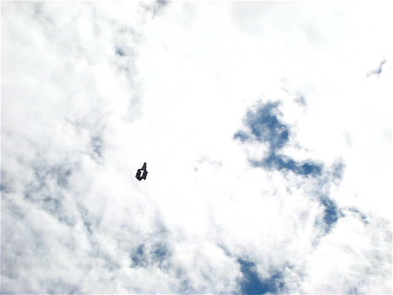
Il faut dire que les bonbons seront lâchés sous le Cody, là-haut, vers 50 m de haut !

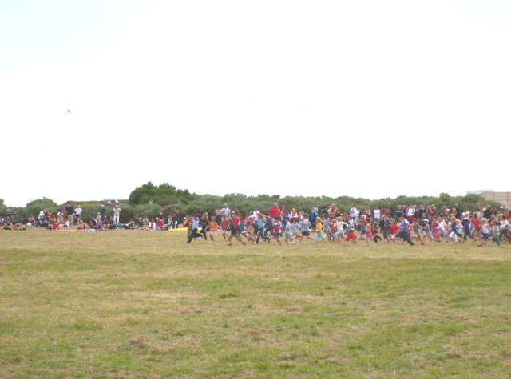
Et c'est parti, il vaut mieux ne pas avoir laissé de cerf-volant par terre, d'autant que les bonbons, de si haut, tombent en dehors de l'aire de démonstration !

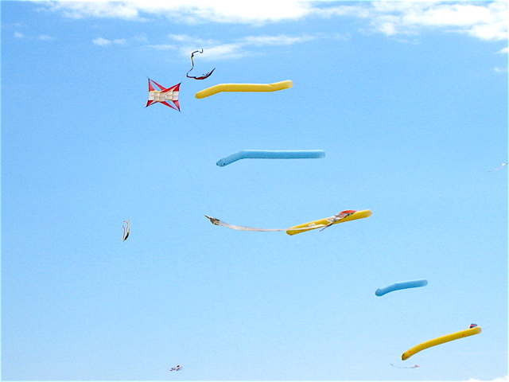
Là-haut, derrière ces énormes queues, des cerfs-volants difficiles à définir, sauf cette belle Box rouge et blanche !

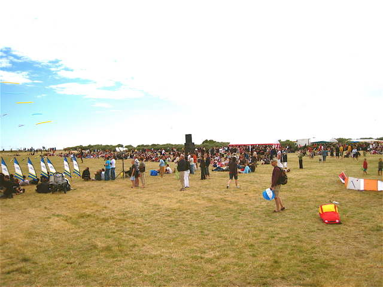
Les spectateurs sont revenus nombreux aujourd'hui, malgré la couverture nuageuse, quand même limitée !

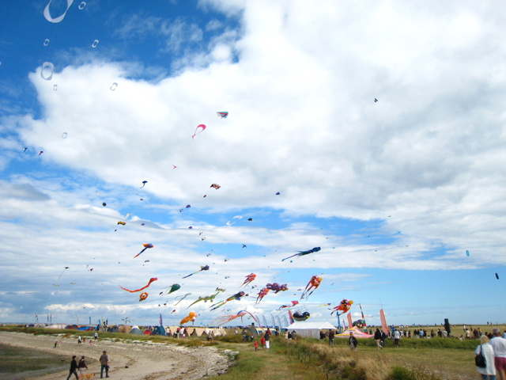
Le public en a pour son argent (même si c'est gratuit) et vient observer de près. On voit les cerfs--volants de 15 km, nous a-t-on dit !

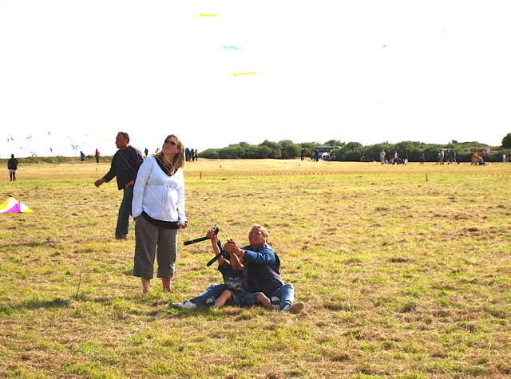
Corinne, la fiancée du Pirate, donne des leçons de NASA à Christian, le fils de Gwenaëlle !

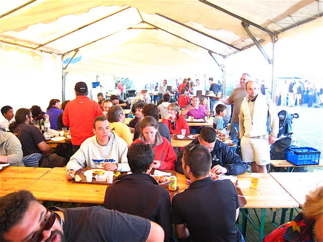
Dîner sous le barnum avant le deuxième vol de nuit. Ce soir, jarret et ratatouille, la qualité (comme la quantité) progresse tous les jours : Samedi midi, le sandwich était très petit pour des appétits de cervolistes, mais, les autres festivals, y a souvent rien samedi midi, alors...

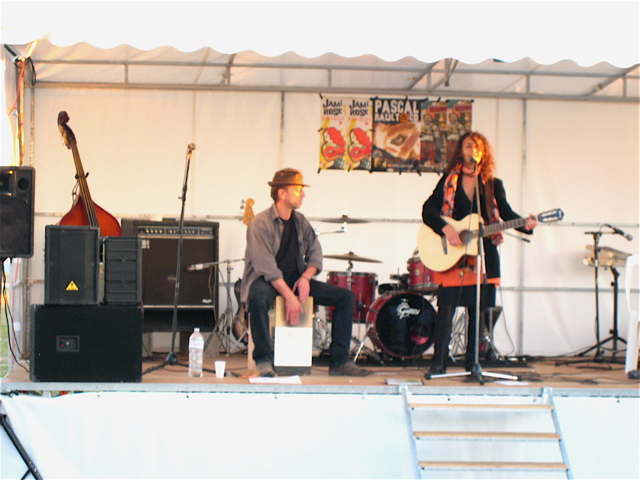
Ensuite, le fest-noz du programme s'est transformé en interprètes divers comme cette chanteuse au timbre spécial...

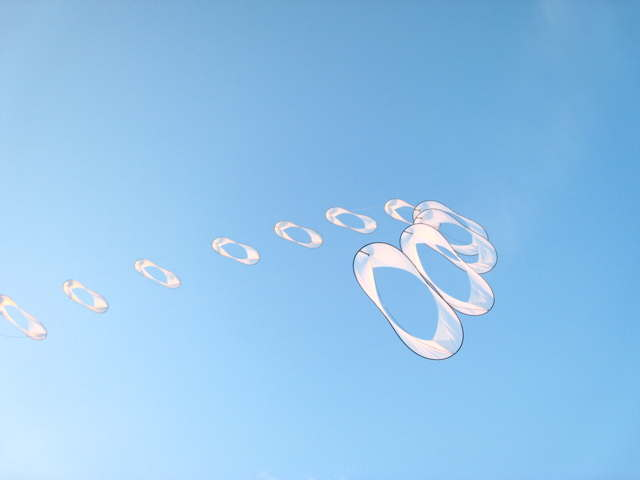
Zézé a monté ses cerfs-volants en un arc orienté comme le vent, très joli !

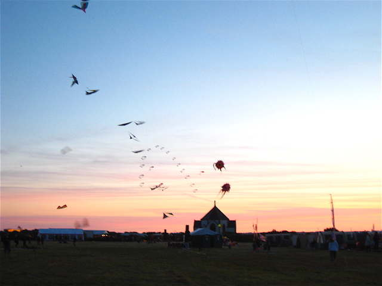
Le crépuscule gagne petit à petit, mais beaucoup de cerfs-volants resteront en l'air longtemps, voire toute la nuit !

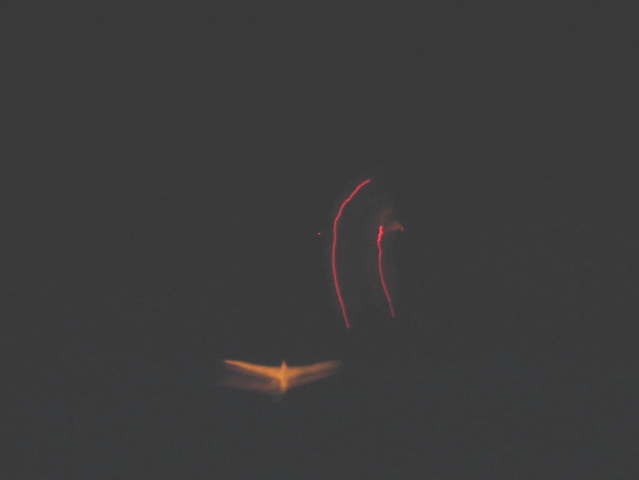
Vol de nuit pour nous seuls, sans musique sauf les vedettes sur la scène, là-bas. Un révo à Leds rouges vient papillonner gracieusement autour de mon Albatros !

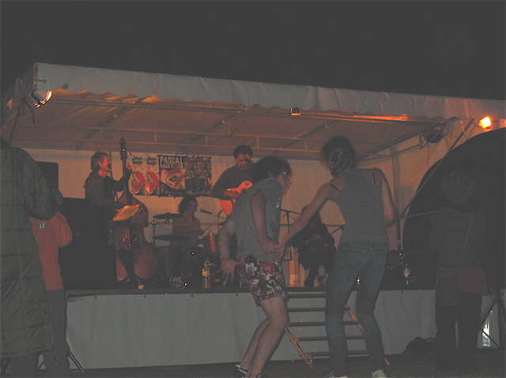
Pendant ce temps, sur l'estrade, les groupes se succèdent avec des talents divers. Fest-Noz ou pas, le public participe volontiers...

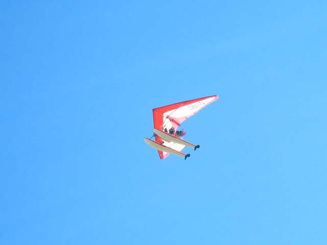
Lundi matin, grand beau temps. Un Deltaplane motorisé et hydravion vient nous survoler de ses deux flotteurs... Le décollage de l'eau doit être difficile avec les puissances habituellement limitées !

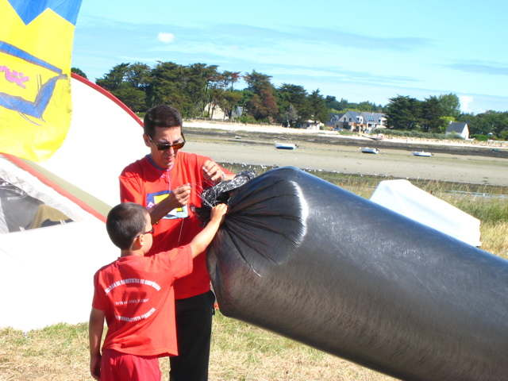
Avant qu'il n'y ait trop de vent, Carlos gonfle des ballons solaires. On en a vu 2 partir vivre leur vie vers l'Est, hier !

Ces deux grands Fagas tricolores traînent deux grandes queues tubulaires des mêmes couleurs...

Sous ces deux grandes banderoles jumelles, un spécialiste fait voler un avion télécommandé...

On verra aussi des Circoflex (jusqu'à quatre) bien tendus et montés en train, belle impression graphique...

Au bord du terrain, côté public évidemment, les marchands de cerfs-volants, dont Gilbert de Vire-Vole qui fera le tour des tentes avec sa marmotte... Sur le toit de la Chapelle, une libellule qui n'est pas allée bien loin !

Avant le déjeuner, des huîtres ont été proposées. Seraient-elles empoisonnées ? Mais non, ça doit plutôt être l'effet de la nuit agitée, et de la chaleur sur le coup de blanc qui les accompagne...

Les Awitas sont malheureusement partis tôt ! Les rangs sont moins serrés, mais il reste quand même des cervolistes monofil !

La rose de Michelle l'Higuinen ne volait pas bien. On se met à quatre dessus pour régler les brides et finalement, elle se comporte honnêtement après les cintrages de rigueur...

Moins de monde, et sur la surface de démo, de la place pour un très grand bol très fin qui se gonfle pourtant vigoureusement...

J'ai sorti ma grue qui vole toujours en balayant de droite à gauche, je n'arrive pas à lui faire passer ça par vent fort. Devant le flow-form de Beauce, je sortirai aussi mon Condor pour finir ce grand week-end en beauté...

Bon, c'est pas tout ça, les grandes tentes, c'est bien, mais il faut les faire rentrer dans leur sac. Et il n'y a pas de truc comme pour les deux-secondes !

Bon, le soleil est encore haut. Je vais voir le château de Suscinio pas loin (voir mappemonde en haut de page...)... Il est très beau, et les murailles et les toitures ont été en grande parties refaites...

Je dîne sur place et je ferai le tour du château sur les pelouses qui le cernent. Les bâtiments intérieurs semblent très beaux et pittoresques aussi...

Les douves sont en très bon état et pleines bien que 15 m plus haut que le ruisseau qui les jouxte... Au bout du pont de pierre d'époque, le pont-levis, gardé par les deux énormes tours d'entrée, est maintenant fixe...

Il reste encore un peu de lumière, je prends la petite route qui longe le Golfe du Morbihan, avec ses pittoresques villages fleuris et ses petits ports.

Enfin je vais dormir à Limerzel sur un beau parking herbu près de l'église. Le lendemain, route vers l'Est le long de la Vilaine. Cette maison est tellement craquante que le propriétaire a dû mettre une pancarte -Cette maison n'est pas à vendre- pour ne plus être dérangé par les acheteurs potentiels...

Je suis encore un peu la Vilaine avec ses beaux points de vue et puis l'autoroute, les péages, le gas-oil et les conducteurs fous (les autres !)...
Penvins : Un beau moment dans la vie de cervoliste itinérant ! Le site est parfait, à part le fait qu'on ne voit pas la mer du terrain, il faut se déplacer jusqu'aux talus... L'accueil est très sympathique et on ne manque de rien, pas même de soleil ou de vent. Certains se plaindront de la chère des premiers jours, mais ils se plaignent aussi que 40 Euros pour 5 repas et 3 petits-déjs c'est trop cher ! Tout le monde est quand même impatient de revenir l'an prochain, merci à toute l'équipe et aux scouts de tous sexes !